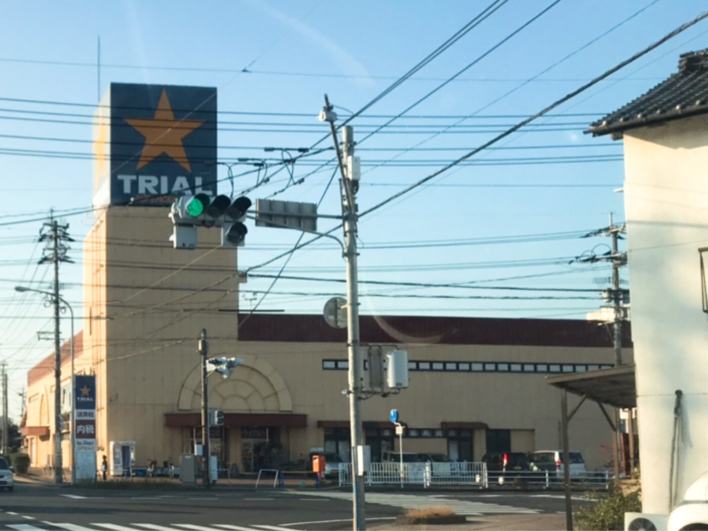

第1位 TRIAL

税込み表示のトライアル！トライアルの安さは素晴らしいと思います。最近はレジ打ちの方が商品だけ「ピッ」ってやってくれて、あとのお金の支払いはレジ横にある機械がやってくれています！時代は進んでますね～！
(2024年5月 トライアルは閉店しております)
みなさん、宇佐市民について知りたくないですか？！
宇佐市民の学生が頻繁にいく場所、好きなからあげ屋さん…ってどこなんでしょうか？
32人の地元の高校生に協力してもらいました！
税込み表示のトライアル！トライアルの安さは素晴らしいと思います。最近はレジ打ちの方が商品だけ「ピッ」ってやってくれて、あとのお金の支払いはレジ横にある機械がやってくれています！時代は進んでますね～！
(2024年5月 トライアルは閉店しております)
同率2位です。スーパーバリューうさは個人的に新鮮市場に雰囲気が似ている気がします。ドラッグストアモリは宇佐市内に2店舗あります！
ドラックストアモリはお買い物金額ごとに抽選券がもらえて、それを集めると月末のくじ引きに参加ができます！小学生の頃の私はこのくじ引きに全力を注いでいました（笑）
(2024年5月 スーパーバリューうさは閉店しております)
すべて同じ票数でした！
コスモスは宇佐市に4店舗あります！アイスクリームや冷凍食品が安いイメージです
トキワはいつもレジ横におまんじゅうや巻き寿司の出店があって、美味しそうなのでついつい追加で買ってしまいます（笑）
場所にもよりますが、宇佐市はある程度のお店はそろっているので住みやすいと思います！